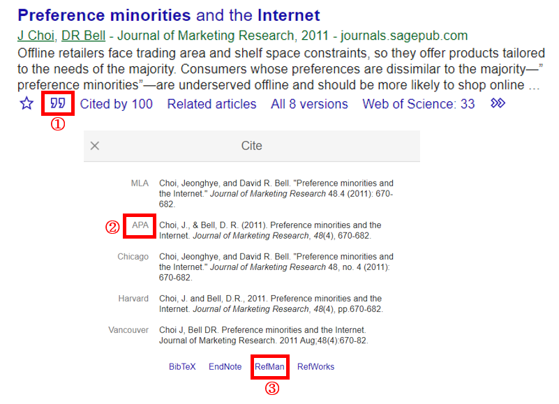

ETC
Literature Review 셋업 예시
참고로 아래 내용은 2020년 5월 6일 후배들에게 보낸 메일을 일부 발췌했다.
방법
1) 드랍박스의 경우 주제별로 Literature 폴더를 만들어 공저자들이 찾기 쉽게 정리한다.
ex) 정부 정책이 소비자들의 모바일 사용에 미치는 영향력에 대해 탐구한다고 생각해보자.
그렇다면 나는 폴더를 3가지 정도로 정리할 것 같다.
--> 내가 보고자 하는 정부 정책의 목표나 효과를 다룬 논문들
--> 정책에 따른 소비자들의 양상을 다룬 논문들
--> 모바일 로그나 사용 패턴을 다룬 최신 논문들
2) 타겟팅 하는 저널 후보군 n개의 최신 논문들을 살펴보며 Forthcoming을 파악 해둔다.
리뷰하는 편집장이나 검토 위원들은 해당 저널에 많은 논문을 내는 사람들이다.
해당 저널에 대한 리뷰가 제대로 이뤄져 있지 않은 논문을 이쁘게 볼 리가 만무하다.
게재연월호가 배정되지 않은 Forthcoming 논문들까지 살펴보자!
3) Mendeley 같은 프로그램 가입도 추천한다.
내가 넣어둔 Mendeley 내의 논문들을 기준으로 비슷한 논문들을 메일로 종종 추천해 준다.
좋은 인용 가능한 논문들도 추천 받을 때가 있다.
활용 방안은 아래 설명

1. PDF 파일 이름은 APA 형식으로 저장해 두길. 제목이 너무 길어지지도 않고, 모든 저자의 성이 나열되면서 필요한 내용은 정리가 되기 때문
2. PDF 파일을 Mendeley에 Drag and drop을 하면 저절로 논문이 리스트업이 될 것이다.
다만 오류가 나거나 매칭이 되지 않는 경우에는 “Refman”버튼을 누르고 Ris 파일을 직접 올려본다
업로드가 되면 양식이 제대로 올라갔는지 확인하고 세부 내용들이 틀린 경우가 많으니 세심하게 수정해준다.
잘 정리가 된다면, Install MS word plugin 이후 논문 마지막 부분에 Insert Bibiliography로 한꺼번에 간편하게 정리 가능
심지어 내가 투고하려는 논문의 인용 양식으로 일괄 정리도 가능해서 간편하다.
3. 좋은 저널인지 확인은 UTD Journal 24나 FT50 Journal을 위주로 보고, Impact factor/Journal Citation Reports/Journal Ranking 등을 참고
뭐라고 게시물을 마무리 해야할지 몰라서 메일 마지막 문구로 정리
"드랍박스로 작업하면 저렇게 올려드리는 것만으로도 이쁨 받을 수 있을거야. 참고하렴."